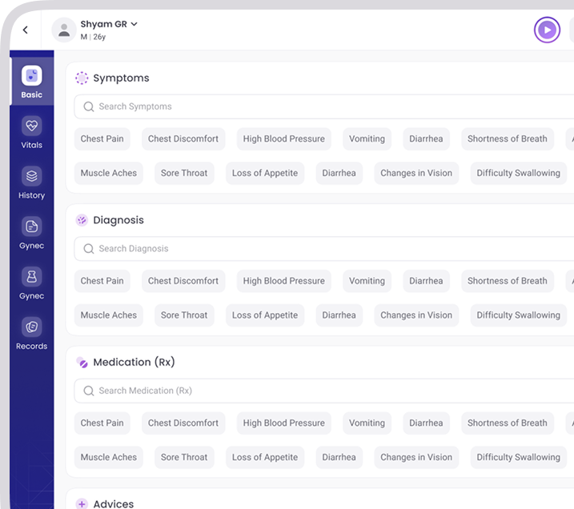
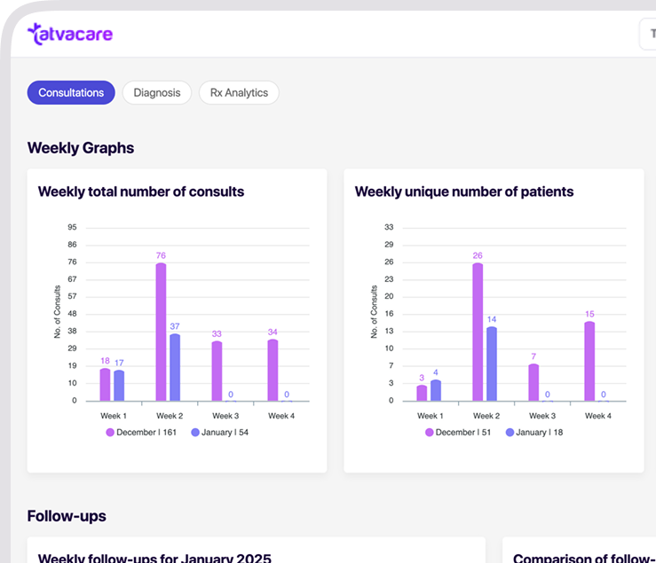

Patient history, SOAP notes, vaccination, lab integration, telehealth — one connected view across every visit.

Every visit, Rx, lab, allergy, family history — on one timeline.
Specialty-specific templates. ICD-10 tagged. Editable.
Schedule reminders by age, condition, region — automated.
SRL, Metropolis, Thyrocare and more. One-tap order, results in record.
OPD slots, walk-ins, queue ETAs, follow-ups — all live.
GST invoices, packages, claims, reconciliation, UPI/cards.
Built-in video, prescriptions, payment — fully ABDM-linked.
Revenue, retention, OPD utilisation, doctor-level metrics.
Consultations, diagnosis mix, Rx patterns, follow-up rates, week-on-week — without exporting a single CSV. Every TatvaPractice account ships with a full analytics workspace, refreshed live from your consults.
